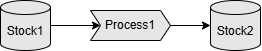

Chapter 1: Getting Started
Welcome to your first QuokkaSim simulation! In this chapter you will
- Create a new Rust project
- Add QuokkaSim as a dependency
- Write and run a minimal "hello world" simulation
1.1. Create a new Rust project
If you don’t already have a project, open a terminal and run:
cargo new hello‐quokkasim
cd hello‐quokkasim
This creates a fresh binary crate with src/main.rs.
1.2. Add QuokkaSim to Cargo.toml
To add QuokkaSim as a dependency, use cargo add quokkasim or add the following to your Cargo.toml file before running cargo fetch:
[dependencies]
quokkasim = "0.0.1"
1.3. Write your first Simulation
In your main.rs file, paste in the following code at the top. This imports the required objects, and also creates our ComponentModel and ComponentLogger enums, which we will learn about later.
#![allow(unused)] fn main() { use std::{error::Error, time::Duration}; use quokkasim::{define_model_enums, prelude::*}; use std::fs::create_dir_all; define_model_enums! { pub enum ComponentModel<'a> {} pub enum ComponentLogger<'a> {} } impl<'a> CustomComponentConnection for ComponentModel<'a> { fn connect_components(a: Self, b: Self) -> Result<(), Box<dyn Error>> { Err(format!("connect_components not implemented from {} to {}", a, b).into()) } } impl<'a> CustomLoggerConnection<'a> for ComponentLogger<'a> { type ComponentType = ComponentModel<'a>; fn connect_logger(a: Self, b: Self::ComponentType) -> Result<(), Box<dyn Error>> { Err(format!("connect_logger not implemented from {} to {}", a, b).into()) } } }
Next we create the individual interactive components of our simulation

Stock1 hold some quantity of material, which Process1 moves at specific times, into Stock2. Add the following into the main() function to create these components, and to connect them together.
#![allow(unused)] fn main() { let mut stock1 = VectorStock::<f64>::new() .with_name("Stock1".to_string()) .with_low_capacity(5.) .with_max_capacity(30.) .with_initial_vector(30.); let stock1_mbox = Mailbox::new(); let mut stock1_addr: Address<VectorStock<f64>> = stock1_mbox.address(); let mut process1 = VectorProcess::<f64, f64, f64>::new() .with_name("Process1".to_string()) .with_process_quantity_distr(Distribution::Constant(12.)) .with_process_time_distr(Distribution::Constant(3.)); let process_mbox = Mailbox::new(); let mut process_addr: Address<VectorProcess<f64, f64, f64>> = process_mbox.address(); let mut stock2 = VectorStock::<f64>::new() .with_name("Stock2".to_string()) .with_low_capacity(15.) .with_max_capacity(30.) .with_initial_vector(0.); let stock2_mbox = Mailbox::new(); let mut stock2_addr: Address<VectorStock<f64>> = stock2_mbox.address(); ComponentModel::connect_components( ComponentModel::VectorStockF64(&mut stock1, &mut stock1_addr), ComponentModel::VectorProcessF64(&mut process1, &mut process_addr) ).unwrap(); ComponentModel::connect_components( ComponentModel::VectorProcessF64(&mut process1, &mut process_addr), ComponentModel::VectorStockF64(&mut stock2, &mut stock2_addr) ).unwrap(); }
Next we'll add some Logger instances to report on what occurs during the simulation, and connect them to our Process and Stock components.
#![allow(unused)] fn main() { let mut stock_logger = VectorStockLogger::<f64>::new("StockLogger".into()); let mut process_logger = VectorProcessLogger::<f64>::new("ProcessLogger".into()); ComponentLogger::connect_logger( ComponentLogger::VectorStockLoggerF64(&mut stock_logger), ComponentModel::VectorStockF64(&mut stock1, &mut stock1_addr) ).unwrap(); ComponentLogger::connect_logger( ComponentLogger::VectorStockLoggerF64(&mut stock_logger), ComponentModel::VectorStockF64(&mut stock2, &mut stock2_addr) ).unwrap(); ComponentLogger::connect_logger( ComponentLogger::VectorProcessLoggerF64(&mut process_logger), ComponentModel::VectorProcessF64(&mut process1, &mut process_addr) ).unwrap(); }
Then we create our Simulation object sim, which controls the progression of the simulation.
#![allow(unused)] fn main() { let sim_builder = SimInit::new() .add_model(stock1, stock1_mbox, "Stock1") .add_model(process1, process_mbox, "Process1") .add_model(stock2, stock2_mbox, "Stock2"); let start_time = MonotonicTime::EPOCH; let mut sim = sim_builder.init(MonotonicTime::EPOCH).unwrap().0; }
We send and initialisation events, tell our simulation to run for an hour, and write the resulting logs to CSV files.
#![allow(unused)] fn main() { sim.process_event(VectorProcess::update_state, NotificationMetadata { element_from: "Init".into(), time: start_time.clone(), message: "Init".into() }, &process_addr).unwrap(); let end_time = start_time + Duration::from_secs(3600); sim.step_until(end_time).unwrap(); let output_dir = "outputs/example_0".to_string(); create_dir_all(&output_dir).unwrap(); process_logger.write_csv(output_dir.clone()).unwrap(); stock_logger.write_csv(output_dir.clone()).unwrap(); }
Our main.rs file is now complete (or refer to the Full Code below if you think you're missing something).
Use cargo run to run the simulation, and we have our logs in the outputs/example_0 directory!
Full Code
use std::{error::Error, time::Duration}; use quokkasim::{define_model_enums, prelude::*}; use std::fs::create_dir_all; define_model_enums! { pub enum ComponentModel<'a> {} pub enum ComponentLogger<'a> {} } impl<'a> CustomComponentConnection for ComponentModel<'a> { fn connect_components(a: Self, b: Self) -> Result<(), Box<dyn Error>> { Err(format!("connect_components not implemented from {} to {}", a, b).into()) } } impl<'a> CustomLoggerConnection<'a> for ComponentLogger<'a> { type ComponentType = ComponentModel<'a>; fn connect_logger(a: Self, b: Self::ComponentType) -> Result<(), Box<dyn Error>> { Err(format!("connect_logger not implemented from {} to {}", a, b).into()) } } fn main() { /* * Create components */ let mut stock1 = VectorStock::<f64>::new() .with_name("Stock1".to_string()) .with_low_capacity(5.) .with_max_capacity(30.) .with_initial_vector(30.); let stock1_mbox = Mailbox::new(); let mut stock1_addr: Address<VectorStock<f64>> = stock1_mbox.address(); let mut process1 = VectorProcess::<f64, f64, f64>::new() .with_name("Process1".to_string()) .with_process_quantity_distr(Distribution::Constant(12.)) .with_process_time_distr(Distribution::Constant(3.)); let process_mbox = Mailbox::new(); let mut process_addr: Address<VectorProcess<f64, f64, f64>> = process_mbox.address(); let mut stock2 = VectorStock::<f64>::new() .with_name("Stock2".to_string()) .with_low_capacity(15.) .with_max_capacity(30.) .with_initial_vector(0.); let stock2_mbox = Mailbox::new(); let mut stock2_addr: Address<VectorStock<f64>> = stock2_mbox.address(); ComponentModel::connect_components( ComponentModel::VectorStockF64(&mut stock1, &mut stock1_addr), ComponentModel::VectorProcessF64(&mut process1, &mut process_addr) ).unwrap(); ComponentModel::connect_components( ComponentModel::VectorProcessF64(&mut process1, &mut process_addr), ComponentModel::VectorStockF64(&mut stock2, &mut stock2_addr) ).unwrap(); /* * Create loggers */ let mut stock_logger = VectorStockLogger::<f64>::new("StockLogger".into()); let mut process_logger = VectorProcessLogger::<f64>::new("ProcessLogger".into()); ComponentLogger::connect_logger( ComponentLogger::VectorStockLoggerF64(&mut stock_logger), ComponentModel::VectorStockF64(&mut stock1, &mut stock1_addr) ).unwrap(); ComponentLogger::connect_logger( ComponentLogger::VectorStockLoggerF64(&mut stock_logger), ComponentModel::VectorStockF64(&mut stock2, &mut stock2_addr) ).unwrap(); ComponentLogger::connect_logger( ComponentLogger::VectorProcessLoggerF64(&mut process_logger), ComponentModel::VectorProcessF64(&mut process1, &mut process_addr) ).unwrap(); /* * Build simulation */ let sim_builder = SimInit::new() .add_model(stock1, stock1_mbox, "Stock1") .add_model(process1, process_mbox, "Process1") .add_model(stock2, stock2_mbox, "Stock2"); let start_time = MonotonicTime::EPOCH; let mut sim = sim_builder.init(MonotonicTime::EPOCH).unwrap().0; /* * Run simulation */ sim.process_event(VectorProcess::update_state, NotificationMetadata { element_from: "Init".into(), time: start_time.clone(), message: "Init".into() }, &process_addr).unwrap(); let end_time = start_time + Duration::from_secs(3600); sim.step_until(end_time).unwrap(); let output_dir = "outputs/example_0".to_string(); create_dir_all(&output_dir).unwrap(); process_logger.write_csv(output_dir.clone()).unwrap(); stock_logger.write_csv(output_dir.clone()).unwrap(); }